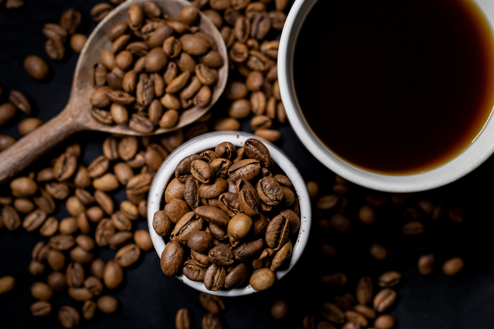

-
Brazil

Brazil produces about a third of the world's coffee, making the country by far the world's largest producer. Coffee plantations, covering some 27,000 km2 (10,000 sq mi), are mainly located in the southeastern states of Minas Gerais, São Paulo and Paraná where the environment and climate provide ideal growing conditions.
Learn more about coffee production in Brazil
The crop first arrived in Brazil in the 18th century, and the country had become the dominant producer by the 1840s. Brazilian coffee prospered since the early 19th century, when immigrants came to work in the coffee plantations.
Production as a share of world coffee output peaked in the 1920s but has declined since the 1950s due to increased global production. -
India

Coffee production in India is dominated in the hill tracts of South Indian states, with Karnataka accounting for 71% (Kodagu alone produces 33% of India's coffee), followed by Kerala with 21% and Tamil Nadu (5% of overall production with 8,200 tonnes). Indian coffee is said to be the finest coffee grown in the shade rather than direct sunlight anywhere in the world.[1] There are about 250,000 coffee growers in the country; 98% of them are small growers.[2] As of 2009, Indian coffee made up just 4.5% of the global production. Almost 80% of Indian coffee is exported;[3] 70% is bound for Germany, Russia, Spain, Belgium, Slovenia, United States, United Kingdom, Japan, Greece, Netherlands and France. Italy accounts for 29% of the exports. Most of the export is shipped through the Suez Canal.[1]
Learn more about coffee production in India
Coffee is grown in three regions of India with Karnataka, Kerala and Tamil Nadu forming the traditional coffee growing region, followed by the new areas developed in the non-traditional areas of Andhra Pradesh and Odisha in the eastern coast of the country and with a third region comprising the states of Assam, Manipur, Meghalaya, Mizoram, Tripura, Nagaland and Arunachal Pradesh of Northeastern India, popularly known as "Seven Sister States of India".[4]
Indian coffee, grown mostly in southern states under monsoon rainfall conditions, is also termed as "Indian monsooned coffee". Its flavour is defined as: "The best Indian coffee reaches the flavour characteristics of Pacific coffees, but at its worst it is simply bland and uninspiring".[5] The two well known species of coffee grown are the Arabica and Robusta. The first variety that was introduced in the Baba Budan Giri hill ranges in Chikmagalur district of Karnataka state in the 17th century[6] was marketed over the years under the brand names of Kent and S.795. -
Ethiopia

Coffee production in Ethiopia is a longstanding tradition which dates back dozens of centuries. Ethiopia is where Coffea arabica, the coffee plant, originates.[1] The plant is now grown in various parts of the world; Ethiopia itself accounts for around 3% of the global coffee market. Coffee is important to the economy of Ethiopia; around 60% of foreign income comes from coffee, with an estimated 15 million of the population relying on some aspect of coffee production for their livelihood.[1] In 2006, coffee exports brought in $350 million,[2] equivalent to 34% of that year's total exports.[3]
Learn more about coffee production in Ethiopia -
Costa Rica


Coffee production has played a key role in Costa Rica's history and continues to be important to the country's economy.
Learn more about coffee production in Costa Rica
In 2006, coffee was Costa Rica's number three export,[1] after being the number one cash crop export for several decades. In 1997, the agriculture sector employed 28 percent of the labor force and comprised 20 percent of Costa Rica's total GNP.[2] Production increased from 158,000 tons in 1988 to 168,000 tons in 1992. The largest growing areas are in the provinces of San José, Alajuela, Heredia, Puntarenas, and Cartago. The coffee is exported to other countries in the world and is also exported to cities in Costa Rica.
As a small country, Costa Rica now provides under 1% of the world's coffee production.[3] In 2015, the value of its coffee exports was US$305.9 million, a small part of the total agricultural exports of US$2.7 billion or of the total of all exports which was US$12.6 billion.[4][5] Coffee production increased by 13.7% percent in 2015–2016, declined by 17.5% in 2016–2017 but was expected to increase by about 15% in the subsequent year.[6] -
Columbia

Coffee production in Colombia has a reputation for producing mild, well-balanced coffee beans.[1][2][3][4] Colombia's average annual coffee production of 11.5 million bags is the third total highest in the world, after Brazil and Vietnam, though highest in terms of the arabica bean.[5][6][7][8] The beans are exported to United States, Germany, France, Japan, and Italy.[9] Most coffee is grown in the Colombian coffee growing axis region, while other regions focus on quality instead of volumes, such as Sierra Nevada de Santa Marta. In 2007, the European Union granted Colombian coffee a protected designation of origin status.[10] In 2011, UNESCO declared the "Coffee Cultural Landscape" of Colombia, a World Heritage site.[11]
Learn more about coffee production in Columbia
The coffee plant had spread to Colombia by 1790.[12] The oldest written testimony of the presence of coffee in Colombia is attributed to a Jesuit priest, José Gumilla. In his book The Orinoco Illustrated (1730), he registered the presence of coffee in the mission of Saint Teresa of Tabajé, near where the Meta river empties into the Orinoco. Further testimony comes from the archbishop-viceroy Caballero y Gongora (1787) who registered the presence of the crop in the north east of the country near Giron (Santander) and Muzo (Boyaca) in a report that he provided to the Spanish authorities. -
Indonesia
Indonesia was the fourth-largest producer of coffee in the world in 2014.[1] Coffee cultivation in Indonesia began in the late 1600s and early 1700s, in the early Dutch colonial period, and has played an important part in the growth of the country. Indonesia is geographically and climatologically well-suited for coffee plantations, near the equator and with numerous interior mountainous regions on its main islands, creating well-suited microclimates for the growth and production of coffee.
Learn more about coffee production in Indonesia
Indonesia produced an estimated 660,000 metric tons of coffee in 2017.[1] Of this total, it is estimated that 154,800 tons were slated for domestic consumption in the 2013–2014 financial year.[2] Of the exports, 25% are arabica beans; the balance is robusta.[3] In general, Indonesia's arabica coffee varieties have low acidity and strong bodies, which make them ideal for blending with higher-acidity coffees from Central America and East Africa.